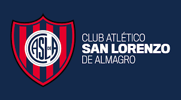

Jugadores destacados en la historia del club
A lo largo de los años, San Lorenzo tuvo futbolistas que marcaron una época y se convirtieron en ídolos
para sus hinchas.

Entre los más recordados se encuentran:
- Leandro Romagnoli
- Héctor "Bambino" Veira
- Roberto Telch
- José Sanfilippo
- Pablo Michelini
Volver al inicio